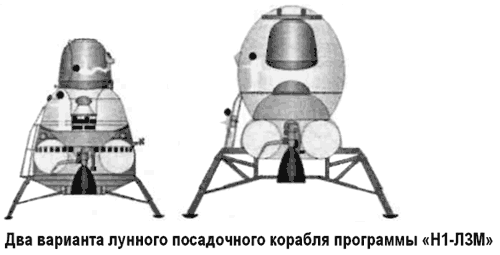

Проект «Н1-ЛЗМ» Василия Мишина
Видя, с какой неохотой руководство отраслью осуществляет финансирование не оправдавшего надежд проекта «Н1-ЛЗ», глава ЦКБЭМ Василий Мишин принял решение о разработке нового улучшенного варианта ракетно-космического комплекса «Н1-ЛЗМ», для чего предполагалось форсировать носитель «Н-1» и создать новый корабль для экспедиции на Луну по двухпусковой схеме.
Согласно расчетам проектантов получалось, что при финансировании, не выходящем за рамки обычного финансирования программы «Н1-ЛЗ», к 1978–1980 годам в СССР появится возможность постепенного развития необходимой инфраструктуры для создания лунной базы и проведения лунных экспедиций продолжительностью до трех месяцев.
Одной из самых больших проблем проекта «Н1-ЛЗ» признавалась недостаточная надежность стыковки орбитального корабля «ЛОК» с взлетевшим с лунной поверхности кораблем «ЛК» из-за малых возможностей радиоэлектронных систем кораблей, слабого знания условий навигации вблизи Луны и невозможности оказания космонавтам всесторонней поддержки с Земли. Требовалось найти новые решения.
Так как грузоподъемность даже форсированного варианта «Н-1Ф» не позволяла в кратчайший срок реализовать прямую экспедицию на Луну, было решено разработать модифицированный вариант, при котором тормозной блок и лунный корабль запускаются на околоземную орбиту при отдельных пусках «Н-1», а затем индивидуально, с помощью собственных ракетных блоков, выводятся на траекторию полета к Луне. Стыковка производится после их выхода на окололунную орбиту еще до посадки на лунную поверхность.
В случае невозможности стыковки лунный корабль с помощью собственного двигателя стартует с окололунной орбиты по направлению к Земле. При успешном осуществлении стыковки тормозной блок используется для схода корабля с окололунной орбиты и гашения большей части скорости.
Мягкая посадка производится с помощью двигательной установки и посадочных опор корабля. В дальнейшем схема полета напоминала схему экспедиции, предлагаемой в рамках проекта «УР-700-ЛК-700».
Понятно, что в программе «Н1-ЛЗМ» предусматривалось широкое использование задела «Н1-ЛЗ». Изучались различные варианты лунного корабля. Так, при одном из них космонавты при старте с Земли находились в спускаемом аппарате, укрепленном в верхней части корабля. При выполнении операций в полете и перед прилунением они переходили через надувной рукав-лаз в бытовой отсек корабля, смонтированный под спускаемым аппаратом. В другом варианте над двигательной частью корабля был установлен обитаемый блок в форме кокона, внутри верхней части которого крепился спускаемый аппарат. Большая часть служебной аппаратуры корабля находилась в герметизированном цилиндрическом приборном отсеке внутри обитаемого блока.
Во время разнообразных операций в полете и на лунной поверхности космонавты выходили из спускаемого аппарата и работали во внутренних объемах обитаемого блока, обеспечивающих не только свободный доступ к приборам управления, но и хороший обзор. При возвращении к Земле перед входом в атмосферу производилось разделение обитаемого блока и выход из него спускаемого аппарата.
Габариты лунного корабля «ЛЗМ» в первом варианте: полная длина — 7,9 метра, максимальный диаметр — 4,5 метра, полная масса — 23 тонны. Экипаж — 2 человека, продолжительность экспедиции — от 14 до 16 дней.
Габариты лунного корабля «ЛЗМ» во втором варианте: полная длина — 9,3 метра, максимальный диаметр — 4,4 метра, полная масса — 25 тонн. Экипаж — 2 человека, продолжительность экспедиции — до 90 дней.
Использование «прямой» схемы с двумя запусками позволяло оснастить корабль комплексом более совершенной радиоэлектронной аппаратуры для точного и надежного выполнения операций, связанных с поиском, встречей и стыковкой на окололунной орбите. Кроме того, такой более крупный «ЛК» имел бы большую свободу маневра вблизи поверхности для выбора места посадки.
В этом проекте наряду с широким использованием задела «Н1-ЛЗ» предусматривалось и создание некоторых новых элементов системы. Если в качестве тормозного двигателя мог быть использован несколько модифицированный блок «Д» комплекса «ЛЗ», то сам корабль и разгонный блок приходилось создавать заново.
Разгонный блок, выполняющий в проекте «H1-ЛЗМ» функции блока «Г» и частично — блока «Д» комплекса «ЛЗ», должен был стать первой советской высокоэнергетической ступенью. На нем предполагалось установить четыре кислородно-водородных ЖРД, разработку которых поручили ОКБ Алексея Исаева. И если по новому разгонному блоку успели выпустить лишь чертежи, то двигатель был доведен до стадии наземных огневых испытаний.

Первый советский криогенный двигатель, построенный по совершенной замкнутой схеме, получился очень экономичным и надежным. Он превосходил аналогичный американский ЖРД, разработанный фирмой «Пратт-энд-Уитни» для верхней ступени РН «Атлас-Кентавр». Несмотря на закрытие лунной программы, в КБ продолжали совершенствовать двигатель, сделав его конкурентоспособным на мировом рынке.
После завершения программы «Аполлон» советский лунный проект в каком бы то ни было виде потерял свою привлекательность для руководства СССР. Денег на вариант «H1-ЛЗМ» выделено не было. Кроме того, в связи с задержкой летных испытаний ракеты «Н-1», программа освоения Луны была переориентирована на беспилотные полеты с постепенным уменьшением числа запусков автоматических станций и последовательным сворачиванием всей программы под предлогом того, что Луна полностью изучена и интереса для науки более не представляет.